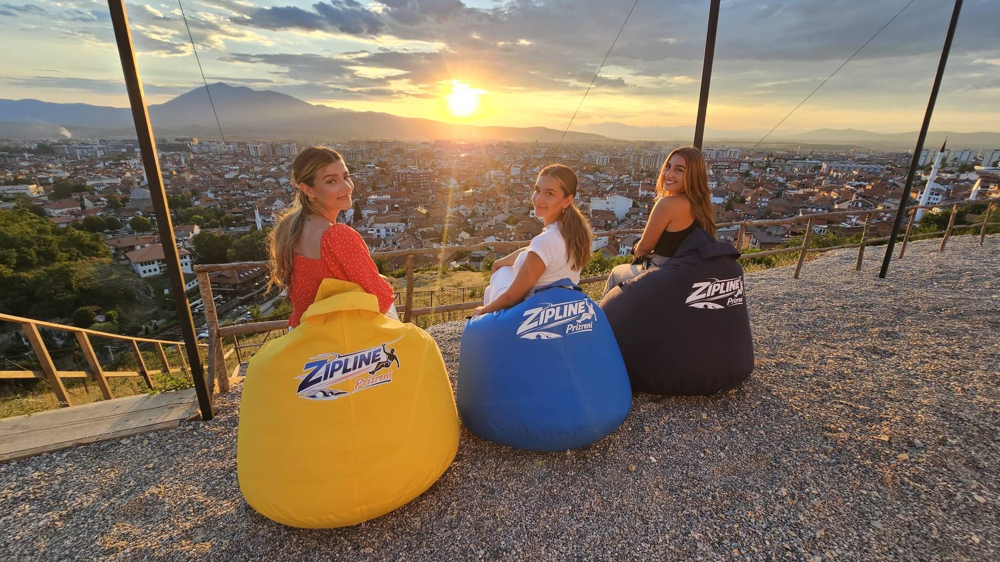
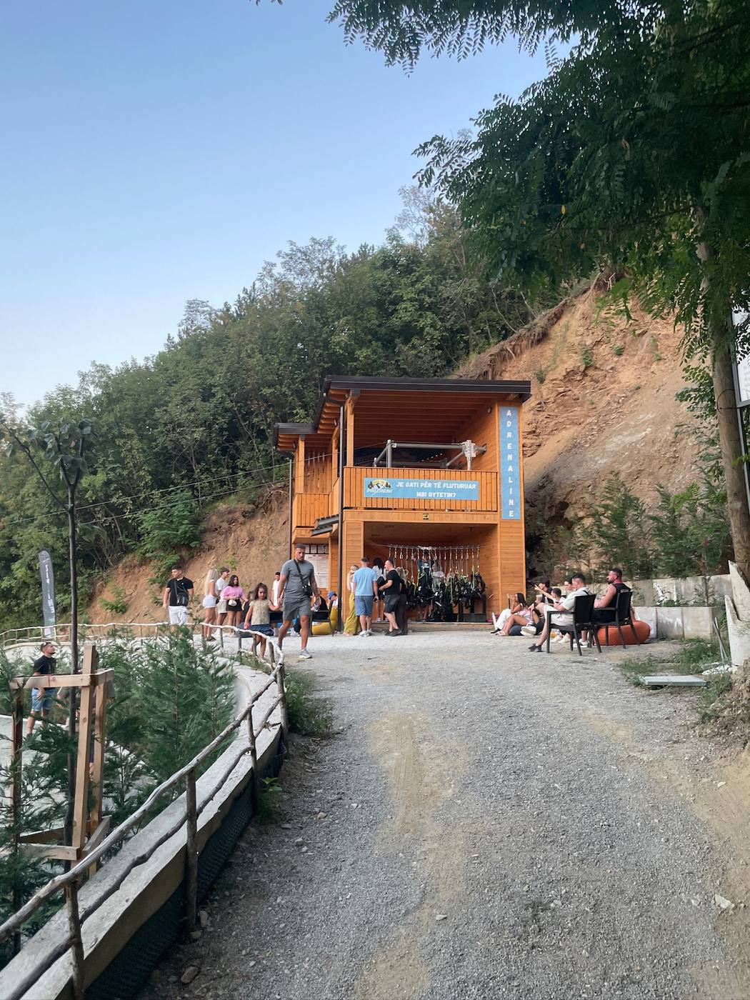
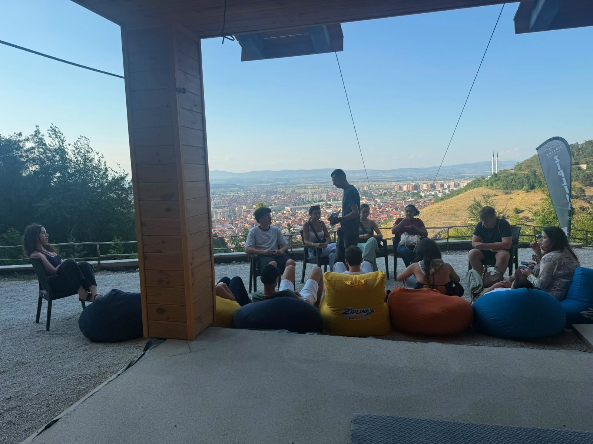
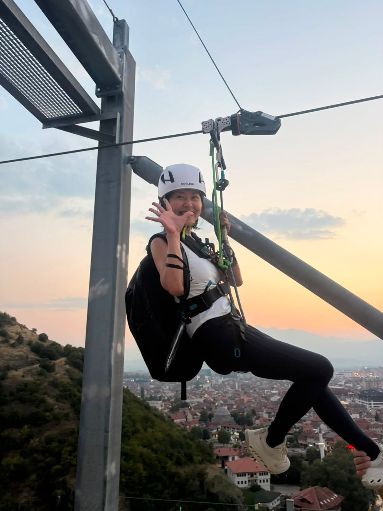
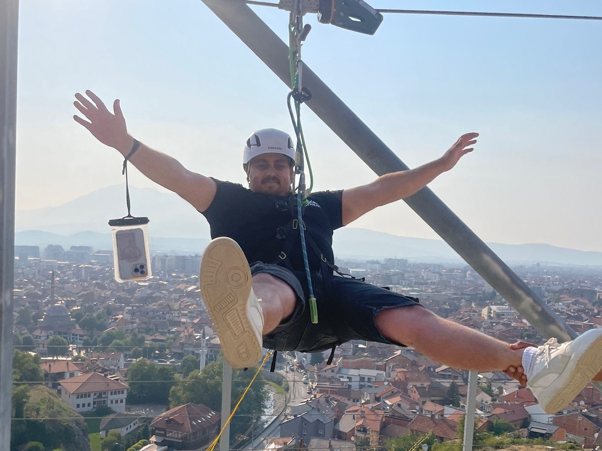
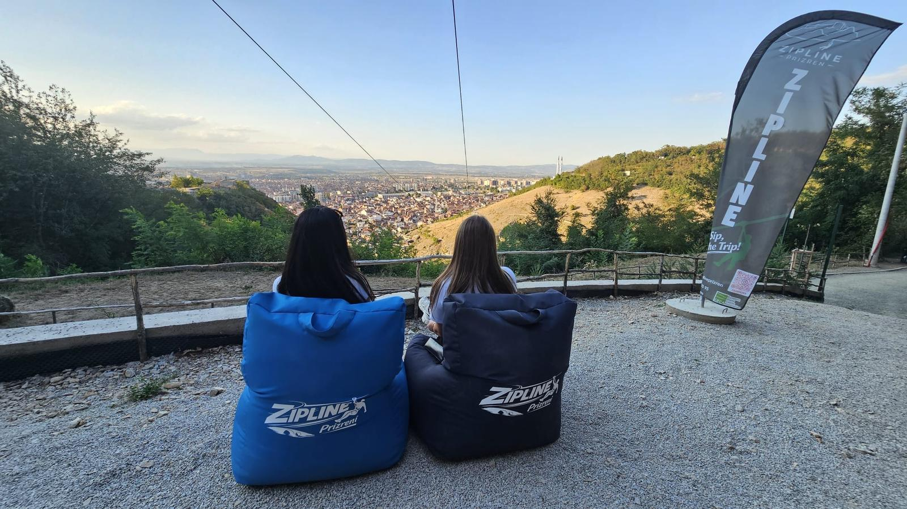

Zipline te Kalaja e Prizrenit
Fluturo mbi Prizren
Qyteti i vjetër poshtë teje, era në fytyrë.
- PikënisjaTe Kalaja e Prizrenit
- Në këmbë15–20 min nga Shadërvani
- Pesha40–100 kg
- PajisjetHelmetë, hark, trajnim

Ambienti
Prizreni nga lart
Nga kablloja
- Perëndimi mbi Prizren
- Mbi grykën e Lumbardhit
- Pamja nga kablloja
- Lugina dhe qyteti
- Kodra e Kalasë





Rregullat
Para se të fluturosh
Siguria